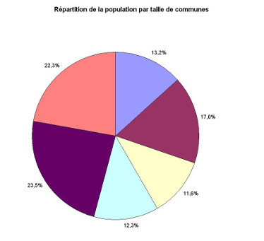

Les couleurs sont une problématique importante pour les utilisateurs qui ne perçoivent pas du tout les couleurs, notamment les personnes aveugles, les grands malvoyants et les personnes ayant des déficiences de perception des couleurs (daltonisme par exemple) ou des contrastes.
Si une personne aveugle ne peut pas du tout voir les couleurs, beaucoup d’utilisateurs n’ont qu’une vision partielle ou dégradée des couleurs. Cela peut concerner une seule couleur, plusieurs couleurs ou des combinaisons de couleurs particulières.
Le déficit de perception des couleurs est très répandu et ses conséquences peuvent être désastreuses pour la perception et la compréhension des contenus et des fonctionnalités.
Or, la couleur est parfois le seul vecteur utilisé pour donner de l’information. Par exemple, dans une liste, vous avez mis en rouge les éléments obligatoires et laissé en noir les éléments optionnels. Aussi, un utilisateur qui ne peut pas voir ces couleurs n’aura pas accès à cette information. Aussi, vous devez toujours fournir un autre moyen que la couleur, de préférence textuel, pour que tous les utilisateurs, quelle que soit leur capacité de perception, puissent avoir accès à cette information.
Une autre problématique liée à la couleur concerne les contrastes. Pour un utilisateur qui a des difficultés à percevoir les contrastes, certains textes peuvent être impossibles à lire si la couleur d’écriture n’est pas suffisamment contrastée par rapport à la couleur du fond.
L’information donnée par la couleur
Lorsqu’une information est donnée par la couleur, elle doit obligatoirement être donnée aussi par une autre méthode, par exemple par un texte qui donne la même information.
En effet, dans certains cas, l’absence d’accès à l’information donnée par la couleur a pour conséquence une perte d’information. Mais ce problème d’accessibilité rend bien souvent les contenus ou les fonctionnalités complètement inutilisables pour les utilisateurs aveugles, très malvoyants ou ceux qui perçoivent mal les couleurs.
Par exemple, on utilise souvent la couleur rouge pour signaler une erreur de saisie dans un formulaire. Or, un utilisateur aveugle, très malvoyant ou percevant mal les couleurs (daltonisme par exemple) ne percevra pas cette couleur, et passera donc à côté d’une information pourtant capitale. Cela l’empêchera même de comprendre pourquoi il ne peut pas valider le formulaire et passer à l’étape suivante.
D’autres cas typiques d’utilisation de la couleur pour véhiculer de l’information :
une fonctionnalité de sélection multiple dans une liste d’objets : si l’objet sélectionné est indiqué uniquement par la couleur, les utilisateurs aveugles, très malvoyants ou ne percevant pas ou mal la couleur se retrouveront dans l’incapacité d’utiliser la fonctionnalité. Dans ce cas, il faudra indiquer textuellement que l’objet est sélectionné ;
l’indication de la page active dans un menu : si le statut actif de la page est indiqué uniquement par la couleur, alors les utilisateurs aveugles ou qui ne perçoivent pas ou mal les couleurs ou les contrastes ne sauront pas qu’il s’agit de la page active. Dans ce cas, on pourra tout simplement ajouter dans le titre du lien une mention sur le modèle : « Accueil - page active », par exemple.
Lors du travail de conception graphique, il faut donc s’assurer que chaque mot ou ensemble de mots dont la mise en couleur est porteuse d’information, possède une alternative (par exemple textuelle) qui transmet la même information. Dans le cas de l’utilisation de motifs (par exemple hachures, pointillés…), le problème reste le même pour les utilisateurs aveugles, qui ne percevront pas la différence d’une couleur à l’autre ou d’un motif à l’autre. Il faut donc, là aussi, prévoir une alternative accessible.
Cela est également valable pour les images ou les médias porteurs d’information : cette information ne doit pas être donnée uniquement par la couleur. Par exemple, dans le cas des diagrammes, des cartes et des graphiques, il vaut mieux prévoir une légende textuelle en plus d’une légende à base de couleurs. Ainsi, il sera plus facile pour les utilisateurs ayant des problèmes de vue de comprendre l’information véhiculée par ces éléments graphiques.
Il n’existe pas de technologie d’assistance efficace pour traiter ces problèmes d’accessibilité : le rôle des concepteurs graphiques à ce sujet est donc crucial.
Important : À noter que l'utilisation d'une information donnée par la forme comme alternative à une information donnée par la couleur sera insuffisante, les utilisateurs aveugles ne voyant ni forme ni couleur.
Exemple d’information donnée par la couleur dans un graphique
Ci-dessous un exemple de graphique où l’information par la couleur est indispensable pour le comprendre. La couleur symbolise un élément et cette couleur est définie dans une légende. La meilleure alternative à cette présentation est alors de rédiger une description détaillée du graphique. Note : il est possible de traiter visuellement cette description détaillée de différentes façons : cf. Description détaillée des images porteuses d’information complexe.

Répartition de la population par taille de communes (description détaillée du graphique) :
Les communes de moins de 1 000 habitants représentent 22,3% de la population.
Les communes qui comptent entre 1 000 et 5 000 habitants représentent 23,5% de la population.
Les communes qui comptent entre 5 000 et 10 000 habitants représentent 12,3% de la population.
Les communes qui comptent entre 10 000 et 20 000 habitants représentent 11,6% de la population.
Les communes qui comptent entre 20 000 et 50 000 habitants représentent 17,0% de la population.
Les communes de plus de 50 000 habitants représentent 13,2% de la population.
Exemple d’information donnée par la couleur dans une illustration
Sur les images, la couleur peut apporter une information. Par exemple, sur l’image ci-dessous, la couleur met en évidence la zone du cerveau concernée dans un article associé. L’information véhiculée ici est la position de la zone en question. Cette information doit se retrouver dans le texte adjacent à l’image. Par exemple, on pourra retrouver dans le texte : « Le noyau est situé à l’arrière du cerveau ».
Il est important que cette information ne soit pas uniquement présente dans le texte de remplacement de l’image. En effet, le texte de remplacement n’est bien souvent accessible qu’aux personnes qui utilisent un lecteur d’écran. Les personnes qui ont des difficultés de perception des couleurs n’utilisent pas ces logiciels et n’auront pas accès au texte de remplacement. C’est pourquoi il est important que la description de l’information donnée par la couleur soit réalisée de manière textuelle et visible.
Contrastes
Les contrastes de couleurs concernent le rapport de contraste entre la couleur d’écriture d’un texte et sa couleur d’arrière-plan.
Ces contrastes concernent :
les textes HTML ;
les textes présents dans les images ;
les textes incrustés dans les vidéos.
Il existe des valeurs qui assurent un contraste minimum suffisant pour une large part des utilisateurs ayant des difficultés à percevoir les couleurs. Les rapports de contraste attendus varient en fonction de la taille de texte, de sa graisse et du niveau d’accessibilité visé.
Pour le niveau AA, les rapports de contraste minimaux sont les suivants :
Rapports de contraste attendus pour du texte sans effet de graisse, niveau AA :
Tanaguru Contrast Finder : un outil en ligne en français qui permet d’évaluer le contraste entre deux couleurs et de trouver des contrastes alternatifs en cas de non-conformité ;
Contrast Ratio (en anglais) cet outil en ligne vous permet de saisir un code couleur pour l’arrière-plan et un code couleur pour le texte, puis il calcule le rapport de contraste pour vous et vous indique le niveau WCAG atteint ;
Color Safe (en anglais) : une application en ligne qui permet d’expérimenter des combinaisons de couleurs immédiatement conformes.
Important : les couleurs d’une charte graphique ne sont pas concernées par cette obligation de contraste. Ainsi, si les couleurs d’une charte graphique sont insuffisamment contrastées, la solution consiste à mettre à disposition des utilisateurs un mécanisme de personnalisation de l’interface. Voir à ce sujet Personnalisation des couleurs et contrastes.